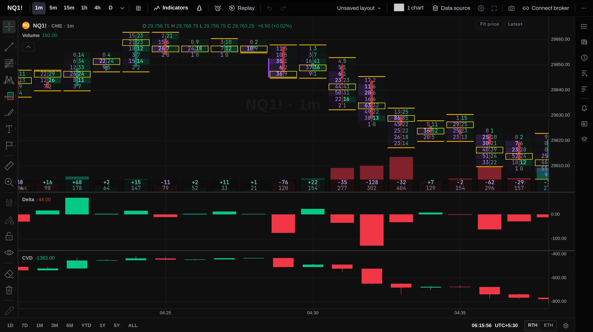
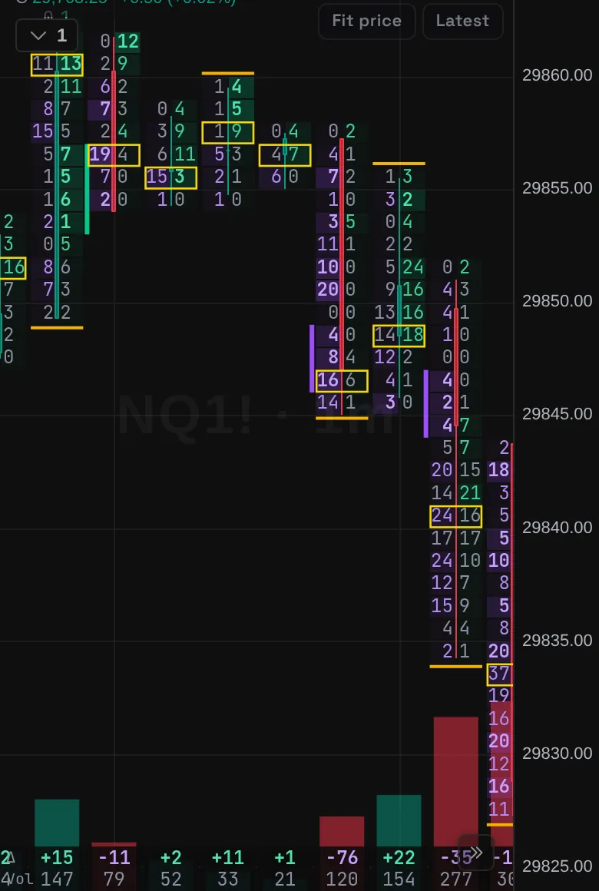
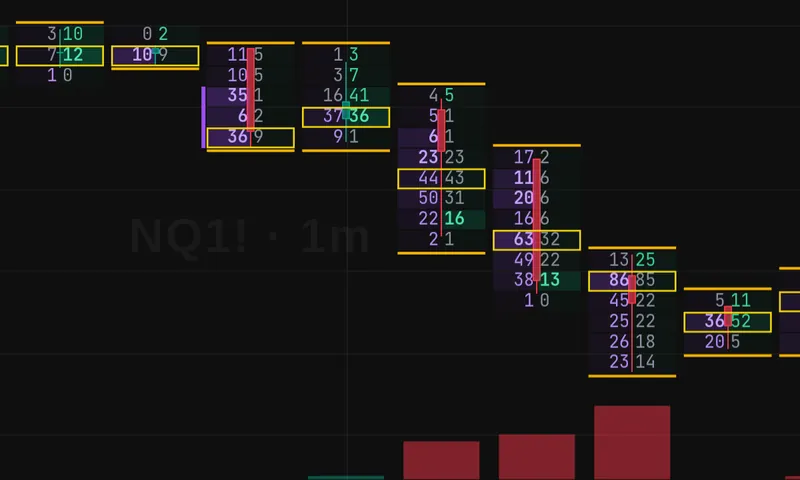
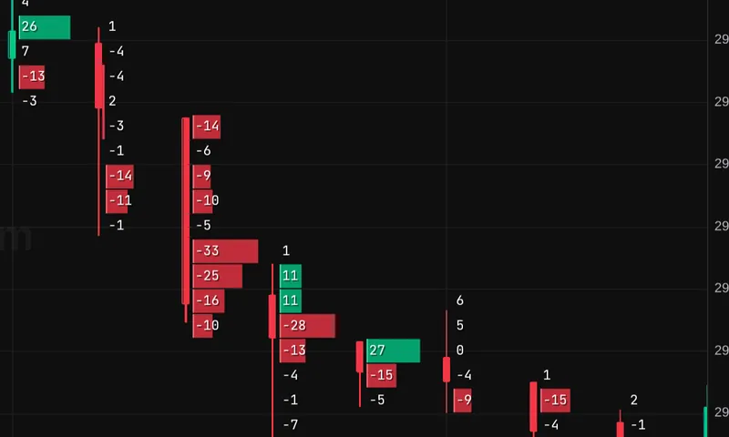
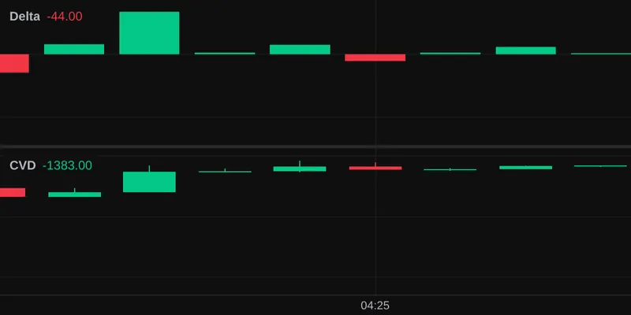
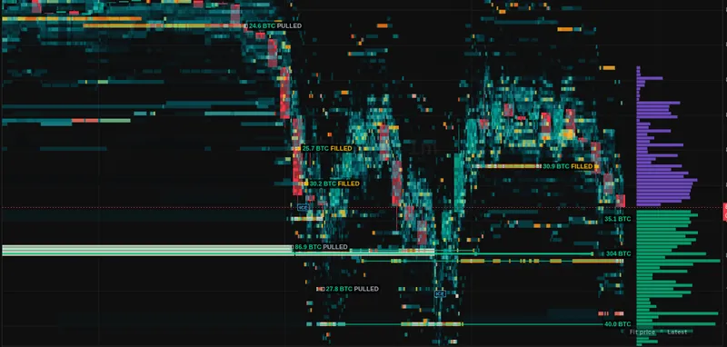
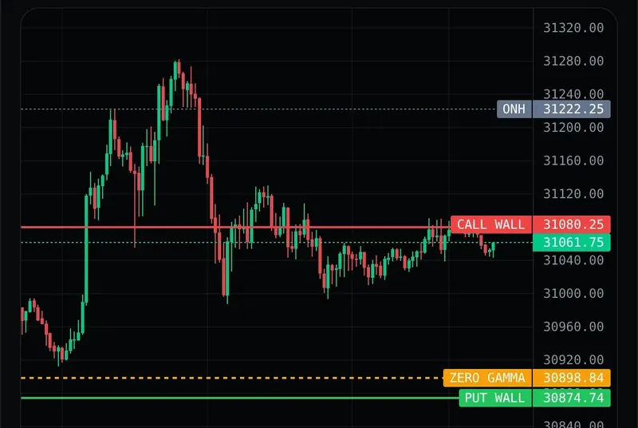
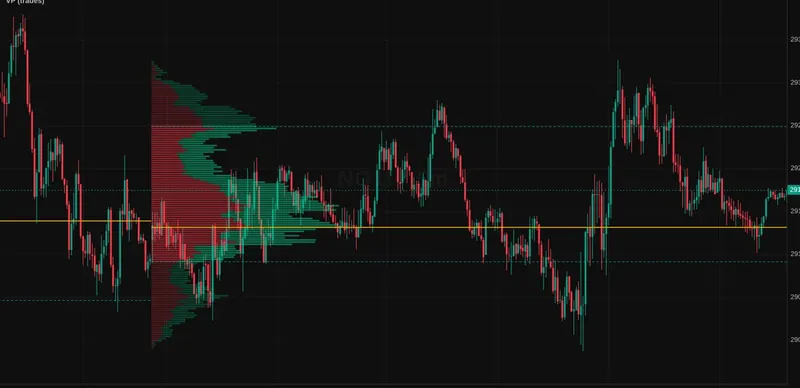
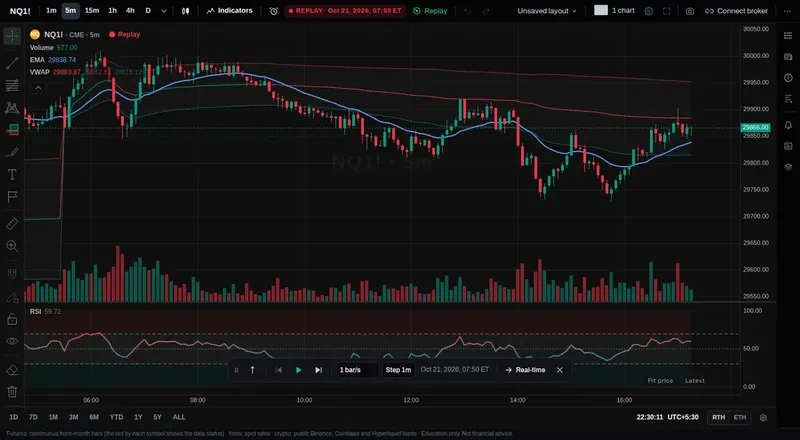

Charts with order flow, GEX levels, replay and a journal. Free to start.
TradeZoro is a charting desk for futures and index traders: footprint, delta, liquidity heatmap and GEX on the same chart, plus the lessons to read them.


What is in the workspace

Footprint
Each candle split by price into contracts sold at the bid and bought at the ask. The busiest price is boxed.

Footprint, ladder style
One column of numbers per bar, with net delta at every price. Good when you zoom out.

Delta and CVD
Net buying minus selling per bar, and the running total under the price chart.

Liquidity heatmap
Resting orders in the book over time, with the size of big levels pulled or filled. Shown on BTCUSDT.

GEX levels
Call wall, put wall and zero gamma from options positioning, drawn on the chart for SPX, ES and NQ.

Volume profile
Volume by price for the session, with the point of control marked.

Replay
Step through a past session one bar at a time. Order flow tools work in replay too.
Journal
Log each trade with setup, session and notes, then review them by tag.
- Chart types
- 21
- Tools in the Order Flow group
- 39
- L2 order-flow tools
- 7
- Academy chapters
- 64